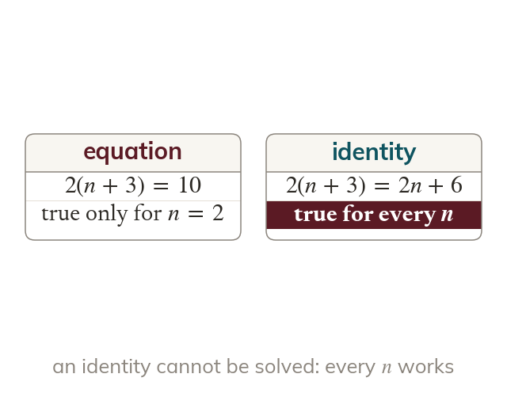

An identity holds for every value
An equation is true for only some values. An identity is true for every value.
An equation is true only for some values of its letter, while an identity is true for every value. So an identity cannot be solved: there is nothing to find.